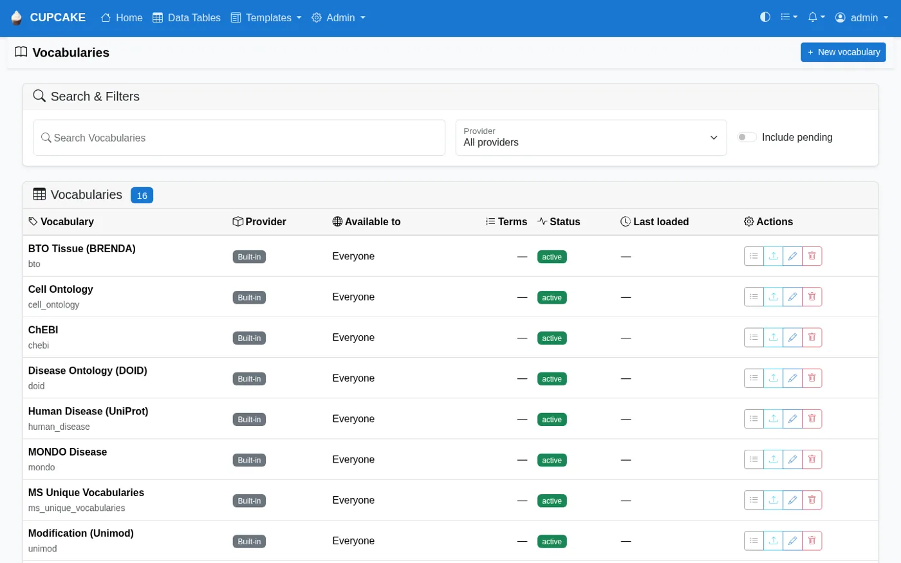
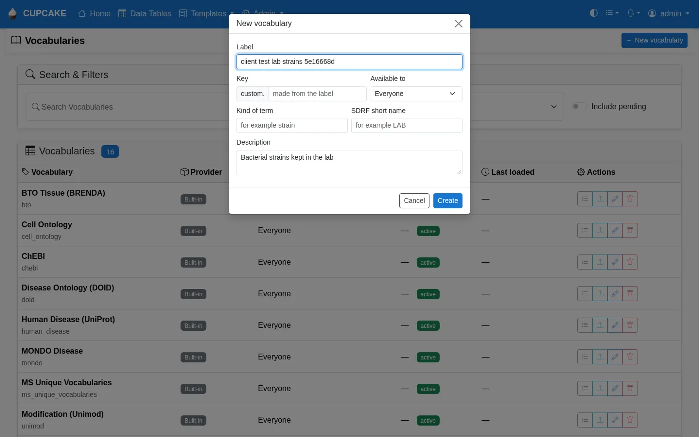
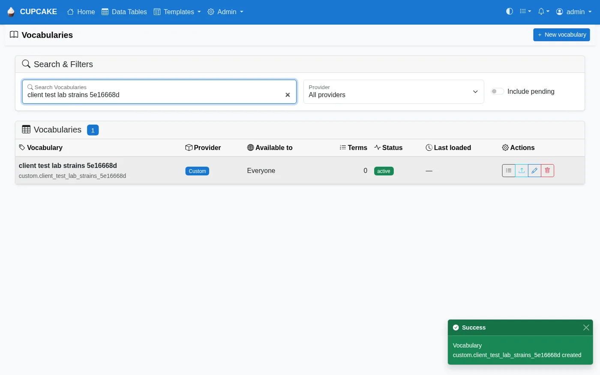
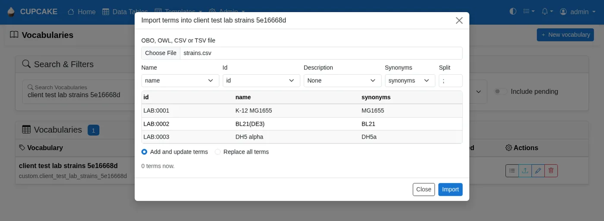
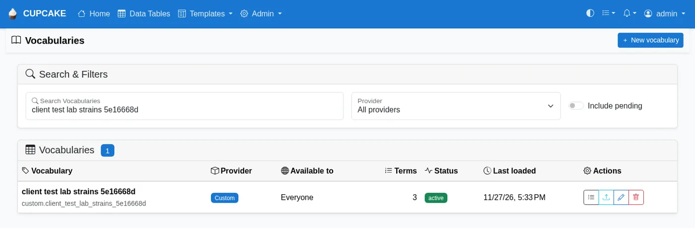
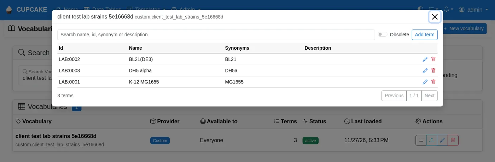
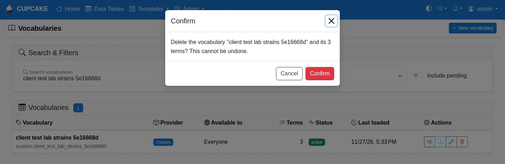

A vocabulary is a list of terms that a column suggests values from, such as organisms, diseases or instruments. Vocabularies lists them with who they are available to, their number of terms, their status and when they were last loaded. Vocabularies provided by a plugin wait for approval by staff before they can be used.

Adding a vocabulary
-
Choose New vocabulary, then enter the kind of term, its SDRF short name, a description and a label; the key is made from the label.

-
Create it. It has no terms yet.

-
Choose Import terms and pick an OBO, OWL, CSV or TSV file. For CSV and TSV files, choose which columns hold the names, ids, descriptions and synonyms. Add and update terms keeps the terms already there; Replace all terms replaces them.

-
The vocabulary now has its terms.

Browse terms searches the terms, edits them, adds new ones and marks obsolete ones.

Delete removes a vocabulary that no column uses.
